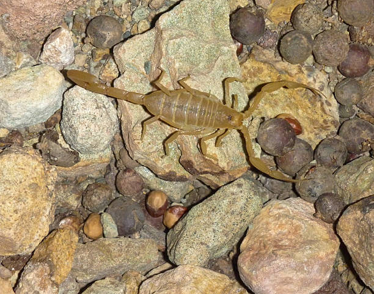
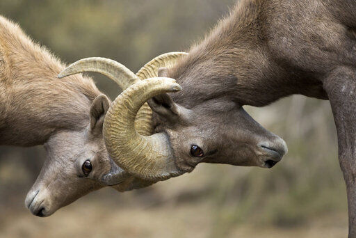

Blog

Next Summer booking open now!
Make sure to reserve your date now, we have limited runs on each river and they go fast. If you have only certain dates that you can get away you should book now. - march 10th 2024

Highlights from the past season
What an incredible season we have had. We celebrated our 50th year of running trips down the Grand Canyon. This year we ran 36 trips down the Grand Canyon introducing over 800 people to one of our favorite places on earth. We trained 4 new guides and welcomed them to our family. The season started off with some chilly weather in the early season, but our guests braved the cold and loved every minute of their trip (show pictures). Later the temperatures soared reaching highs of 120 F in the Grand canyon and 95 on the Salmon. We didn't have any trouble getting people in the water at those temperatures. - Janurary 10th 2024

Encounters in the wild!
Our trips are all run in some of the most remote areas of the United States. We share these areas with lots of critters both large and small. Here are some tips on what to do if you should find yourself face to face with one.
Scorpions:
There are hundreds of varieties of scorpions, most of them being harmless. There are, however, a handful of them that can be dangerous and even potentially lethal. Scorpions can be found in almost every ecosystem and are very adaptable to their environment. The scorpion that calls Phantom Ranch in the Grand Canyon home is the Bark Scorpion, the most venomous in the United States. Do not worry though, the bark scorpions are only lethal to their prey and luckily humans are not on that list!
They spend the day hiding and crawl out at night to hunt. They will eat crickets, moths, spiders and other insects. Many compare their sting to an intense bee sting. Relief can be found with ice, aspirin and time.

Big horn sheep:
For many people, bighorn sheep symbolize the rugged mountain west. It is one of two species of wild sheep in North America. It's compact body is muscular with chocolate brown fur. Most weigh 160-250 lbs. They have exceptional vision, hearing and smell that helps them detect and avoid predators.
Their large curved horns can weigh up to 30 lbs. Females also have horns but they are short with a slight curvature.
Horns are used as tools for eating and fighting. If you encounter a big horn sheep, don't agitate it. The park service asks that you stay 100 feet away from big game animals. Leave them enough room for escape if they feel threatened. - September 16th 2023